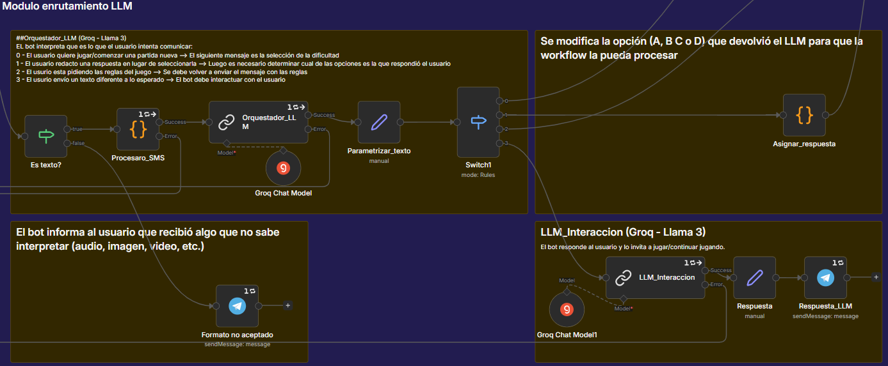
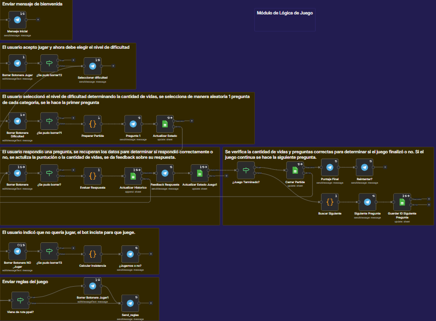

Resumen del Proyecto
Este proyecto (desarrollado como entrega final para el curso "AI Automation" de Coderhouse) consiste en un workflow automatizado en n8n que opera un juego de trivia a través de Telegram. Para manejar la imprevisibilidad de las respuestas humanas, el sistema utiliza una arquitectura híbrida: combina expresiones regulares para interactuar con botones de interfaz y Modelos de Lenguaje (Llama 3 vía Groq) para evaluar semánticamente el texto libre enviado por el usuario. El estado de las partidas y el inventario de preguntas se administran de forma persistente utilizando Google Sheets como base de datos.
Arquitectura y Módulos Clave:
- Enrutamiento Inteligente (Orquestador LLM): Cuando el usuario escribe texto libre, un modelo LLM deduce la intención (responder, jugar, reglas o reprender) y devuelve un JSON estructurado para enrutar el flujo.
- Anfitrión IA Sarcástico (Interacción LLM): Si el usuario envía mensajes fuera de contexto, la rama "reprender" alimenta a un segundo LLM con el estado de la partida actual. Este redacta una respuesta dinámica y sarcástica (estilo porteño) para encarrilar al usuario de vuelta al juego.
- Lógica de Juego Matemática: El flujo configura vidas y multiplicadores de puntaje dinámicos según la dificultad elegida. Evalúa respuestas, actualiza el progreso y limpia la interfaz borrando botoneras obsoletas de Telegram en tiempo real.
- Ingesta de Datos y Analítica: Unificación de datos desde Telegram y múltiples hojas de cálculo mediante nodos de código. Además, se registra un log histórico por cada respuesta procesada para métricas de Business Intelligence.
Buenas Prácticas Aplicadas:
- Prevención "Anti-Zombie" (Idempotencia): Verificación estricta que cruza el ID del botón presionado contra el ID de la base de datos, previniendo fallos por doble contabilización si un usuario presiona botones viejos.
- Control de Sesión (Time-To-Live): Evaluación de timestamps para limpiar variables de estado si una partida supera las 24 horas de inactividad.
- Tolerancia a Fallos (Error Handling): Nodos configurados con políticas de reintento y continuación en caso de caídas de APIs externas, junto con notificaciones automáticas de mantenimiento al usuario.
- Filtrado de Carga Útil: Validación nativa para ignorar envíos de imágenes, audios o stickers, asegurando que los nodos de procesamiento LLM solo operen con texto válido.
Demostración del Bot en Acción
Módulo de Ingesta, Error Handling y Unificación

Orquestación Semántica con LLM (Groq)

Lógica Condicional y Motor de Juego

¿Buscás automatizar procesos complejos?
Diseño flujos de trabajo escalables integrando lógica tradicional con modelos de inteligencia artificial para optimizar operaciones y crear herramientas conversacionales.
Conectar en LinkedIn Enviar Correo